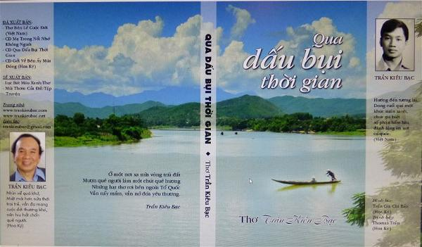

Thành thật cám ơn nhà thơ Trần Kiêu Bạc đã gởi tặng tập thơ Qua Dấu Bụi Thời Gian. Tập thơ đến tay tôi vào một sáng đầu xuân. Ngoài trời nắng đẹp, cây lá xanh tươi, hương hoa ban mai thoang thoảng nhẹ đưa. Tôi là người yêu thơ nên đón nhận tập thơ với lòng hân hoan, trân trọng. Và tôi cho rằng đó là món quà tinh thần quý giá mà tác giả đã gởi tặng mình.

.Lần dở những trang thơ, tập thơ trình bày đẹp, trang nhã, nhất là hình bìa Dòng Sông Con Đò, sắc màu thân thương, hình ảnh đã làm ta thấy lại quê hương. Thứ tình mà mọi người tha hương đều rất trân trọng.
Đây là một thi phẩm chứa nhiều kỷ niệm. Tất cả là những bài thơ hay, đậm đà tình cảm về Mẹ, về gia đình, lời lẽ trong sáng, tâm tư của tác giả rất chân thật, rất phong phú, tha thiết với quê hương với bạn bè, với nguồn rung cảm chân thành của một tâm hồn nghệ sĩ, thêm vào đó lời thơ diễn đạt rất nghệ thuật, mỗi bài thơ mang âm hưởng của nhạc, của những cung bậc với giai điệu khi cao khi trầm, vần điệu phóng khoáng, những cảm xúc, những ray rứt lẫn xót xa, tạo ra bao vần thơ thật trang nhã và cảm động. Tôi rất tâm đắt và rất ngưỡng mộ. Tôi lại càng sững sờ và ngạc nhiên lẫn khâm phục về bài viết thay lời bạt của Nguyễn Thị Mỹ Châu hiền nội của tác giả quả là xuất sắc.
Đặc biệt nhất về thơ của Trần Kiêu Bạc. Tác giả đã dành hầu hết những bài thơ nhắc về “Mẹ”. Mẹ là dáng dấp quê hương, là bóng mát, là những kỷ niệm êm đềm thời thơ ấu. Tác giả khắc họa tình cảm nhớ thương sâu sắc, chân thành và thiết tha, mặn nồng, không sao có thể quên được. Những bài sau khi đọc tôi thật xúc động và rất cảm mến tác giả, bài nào cũng làm tôi ngậm ngùi.
Đọc Qua Dấu Bụi Thời Gian đã có trong tôi cái cảm khái. Tôi không phải là người bình thơ. Nhưng trong những bài thơ hầu hết đều có một nỗi niềm và tôi cũng tìm thấy nét gần gủi, tôi mạn phép xin nêu vài nhận xét tiêu biểu một số bài thơ mà tác giả viết dành riêng để tưởng nhớ Mẹ mình:
Về thăm mồ Mẹ gió đong đưa
Mưa rớt lâm râm khoảng cuối mùa
Áo mỏng đơn sơ còn chưa ướt
Mà sao hai mắt dột đầy mưa?
(Bài Tứ Tuyệt Thăm Mồ Mẹ trang 240)
Tôi xúc động mạnh theo những điều tác giả diễn tả qua bài thơ Tứ Tuyệt Xa Mẹ. Phải chăng đó là biểu hiện của một con tim đa cảm, lòng lưu luyến khi khuất xa mới thấm thía. Trong cảm xúc của mình tác giả đã thể hiện:
Cầm theo ve Nhị Thiên Đường
Dầu còn phân nửa, tình thương Mẹ đầy
Xa quê đếm chuỗi ngày dài
Ve dầu nhỏ xíu giữ hoài bên lưng!
(Bài Tứ Tuyệt Xa Mẹ, 1993 – trang 234)
Với tâm hồn nhạy cảm của thi nhân, anh tâm sự qua lời thơ chân thực mà xót xa:
…
Xa lộ lạnh lùng phóng theo đường thẳng
Mà lòng con xa xứ chạy lanh quanh
…
Con bên này nhớ Mẹ bên kia
Như xa lộ thẳng đường không sao khác
Chiều nay nhớ nhà xe chở đầy hương Tết
Con chở theo mình mùi Mẹ đầu năm!
(Mùi Mẹ Hương Tết - Trang 1)
Thơ là sự kết tinh ngôn ngữ có chọn lọc, nhà thơ diễn đạt tư tưởng, tình cảm hết sức chân tình. Dù bao nhiêu tuổi đời đi nữa mất Mẹ con cũng bơ vơ, với lòng yêu thương thành kính, tác giả đã viết bài thơ “ Những Lằn Roi Của Mẹ” để nhớ Mẹ, thèm Mẹ, thèm cây roi thơ ấu “ Roi vẫn còn đây Mẹ vắng rồi”:
…
Nhìn lên ảnh Mẹ những ngậm ngùi
Nhớ lằn roi nhẹ nhớ không nguôi
Con vẫn đi theo đường Mẹ dẫn
Tạ ơn roi Mẹ giúp nên người
(Nhớ Lằn Roi Của Mẹ - trang 2)
Những vần thơ đó đã làm cho người đọc thật cảm động, trong thơ tác giả mang khá nhiều tâm sự, rất gần gủi, rất chân thành, người giàu tình cảm thường nhớ về kỷ niệm, tuy những kỷ niệm nhỏ nhoi thời thơ ấu, những lằn roi của Mẹ đã hằn sâu trong tâm khảm, những lằn roi nhẹ giúp con nên người, mà nhớ không nguôi.
Mỗi bài thơ là mỗi phong cách, tiêu biểu cho một khuynh hướng nội tâm, ẩn hiện đằng sau tâm trạng u buồn:
Thượng tuần tháng Giêng trăng dẫn Mẹ đi
Đóa hồng đỏ trên ngực con hóa thành hoa trắng
Vu Lan nầy trăng về trong mưa xám
Trăng trở lại một mình, hoa vẫn trắng màu tang
…
Vu Lan nầy không về, mẹ ở tận nơi đâu?
(Mùa Trăng Vu Lan Vẫn Biền Biệt Mẹ - trang 3)
Anh đã cụ thể hóa trong ý thơ của mình"Trăng dẫn Mẹ đi…Trăng trở lại một mình…” Nỗi nhớ của anh càng sâu sắc.
Và tâm trạng buồn thương ấy đã luôn luôn ám ảnh, những lời thơ Lạy Mẹ, dâng Mẹ não nuột đến vô cùng, tác giả nghẹn ngào, “Khi nắm đất sau cùng lấp kín mộ sâu”… “ Con quỳ đây lạy Mẹ đến vô cùng”, đọc bài “ Bài Thơ Dâng Mẹ” tôi không khỏi cảm thương, không có thứ tình nào cao quý thiêng liêng bằng tình Mẹ, mất Mẹ rồi “Quỳ trước bàn thờ cam phận mồ côi”:
Khi nắm đất sau cùng lấp kín mộ sâu
Con trở về nhà một mình trống vắng
Trên ngực con nở đóa hoa hồng trắng
Quỳ trước bàn thờ cam phận mồ côi
…
Con quỳ đây lạy Mẹ đến vô cùng
Trong hương khói tìm đâu hình bóng Mẹ
Nửa đoạn đời sau trong miền dâu bể
Vẫn mang nặng hoài hai chữ mồ côi
Những lạy nầy xin dâng Mẹ, Mẹ ơi!
(Bài Thơ Dâng Mẹ - trang 4)
Nỗi buồn đã theo suốt cả đoạn đời anh, anh sống với nó và hòa điệu thành sức sống của những lời thơ nhớ nhung “Bài thơ nầy viết riêng Mẹ thôi” tuyệt diệu, diễn tả chân dung người Mẹ bằng những giọt lệ từ con tim, cảm động biết bao:
…
Bài thơ nầy con viết riêng Mẹ thôi
…
Mưa bây giờ gợi nhớ lúc mưa xưa
Mưa quất mạnh lằn roi vào đời Mẹ
Những giọt mưa đau cướp đi tuổi trẻ
Những trận roi đời làm đời Mẹ mất niềm vui
Bài thơ nầy con viết riêng Mẹ thôi…
(Bài Thơ Viết Riêng Cho Mẹ - trang 5)
Với tâm hồn đa cảm, hình ảnh người Mẹ hiền là chất liệu tạo cảm xúc trong thơ, qua lời thơ lúc nhẹ nhàng lúc sầu não, đêm vẫn đen vô cùng “Từ khi con mất Mẹ” một nỗi mất mát to lớn “Còn cơn bão nào không”… “Nỗi đau đớn ngậm ngùi”:
…
Trong hư ảo khói nhang
Con nghe mùi của Mẹ
Mùi thơm ngày còn bé
Hương sữa Mẹ đầu đời
…
Mùi riêng Mẹ cho con!
(Trong Hư Ảo Khói Nhang, Vẫn Còn Thơm Mùi Mẹ - trang 6)
Nhà thơ cảm thấy trống trải quạnh hiu, trông ngóng mỗi chiều chờ đợi Mẹ về, nhưng Mẹ đã xa cách ngàn trùng. Thấy lá vàng rơi, một chiếc lá bay vô tình nào có phải Mẹ về thăm! Không phải Mẹ đâu!:
…
Chiều đợi Mẹ về! Không thấy Mẹ đâu!
Trông ngóng Mẹ ngày nầy qua ngày khác
Không có Mẹ lắm lần con đi lạc
Không ai dắt qua vũng xoáy cuộc đời
…
Chiều đợi Mẹ về! Chỉ thấy khói nhang!
(Chiều Đợi Mẹ Về - trang 7)
Những lời thơ rung cảm về cuộc sống, băn khuăn day dứt “Đêm Bên Ảnh Mẹ” quỳ bên ảnh Mẹ mà thấy xa thật xa:
…
Mẹ gần con tiếng khóc
Như ngày con ra đời
Mẹ bây giờ cách biệt
Con bây giờ mồ côi
(Đêm Bên Ảnh Mẹ - trang 8)
Cái buồn thiên cổ, cái buồn gắn với đời dĩ vãng xa xăm, nhiều câu nói lên cái buồn đều có ý nghĩa mênh mang thương tiếc như thế, khi về với Mẹ sau nhiều năm xa biệt ở quê người, không có Mẹ kề bên “Loanh quanh trong khốn khó cuộc đời” Nhưng hởi ơi! ngày về “Bếp Lạnh”:
…
Con tần ngần trước cửa Mẹ ơi
Không thấy Mẹ đâu, Mẹ vắng rồi
Bếp lửa không ai khơi lửa ấm
Con về con khóc Mẹ không nguôi.
(Bếp Lạnh - trang 9)
Trên tất cả tình cảm nhân loại, chỉ cần nghe tiếng Mẹ, nói đến tình Mẹ là tim ta đã thấy rung động, đã thấy yêu thương vô bến vô bờ. Nhưng đau khổ nhất là không còn Mẹ tác giả đã thể hiện tâm sự trong cảm xúc của mình:
…
Đếm tay hơn bốn ngàn ngày
Mẹ ra đồng vắng nằm ngoài sương đêm
…
Mẹ ru con suốt đêm trường
Giờ con ru Mẹ qua hương khói mờ
Ngủ đi, Mẹ ngủ …ầu ơ!
(Hát Ru Cho Mẹ - trang 10)
Bao nhiêu ấn tượng về Mẹ, mãi mãi còn lưu lại trong trí tác giả, gợi nhớ hoài, lặng đi trong mơ tưởng đêm rồi chiêm bao thấy Mẹ về:
…
Nhớ con lắm bận Mẹ về thăm
Trong những đêm mơ thấy Mẹ gần
Thật ra Mẹ cách xa ngàn dặm
Chiêm bao bóng Mẹ đến trăm năm.
(Đêm Thấy Mẹ Về Thăm - trang 11)
Có những bài thơ cứ vương vấn trong trí tôi mãi, lúc nào cũng như văng vẳng bên tai lời tác giả “ Mẹ ơi con thấy Mẹ hoài”…“Mẹ giờ trong khói hương bay” vì những nỗi nhớ thành thực của tác giả lúc nào cũng nghĩ “Mẹ vẫn mãi bên con”:
…
Mẹ ơi con thấy Mẹ hoài
Trong vần con đọc trong bài học xưa
Trong cơn gió chướng trái mùa
Trán con hâm nóng Mẹ ru thì thầm
…
Mẹ bên con những tháng ngày
Cho con hơi ấm gởi đầy tình thương
Mẹ không về giữa ngày thường
Đêm đêm con thấy trong sương Mẹ về.
(Mẹ Vẫn Mãi Bên Con – trang 13)
Lại có khi suối buồn thương cứ tự trong thâm tâm tuôn ra lai láng, biết rằng sự chia biệt là đau đớn, nhớ thương, mà nhất là nỗi đau thương tiếc “Nhà không còn Mẹ”:
Cám ơn người đã ghé thăm Mẹ tôi
Tiếc đã trễ rồi, Mẹ tôi vừa mất
Trễ một chút thôi mà vườn cau thôi xanh ngắt
Lá trầu trải vàng một sắc nhớ Mẹ xưa!
…
Mẹ không về, nhà bỗng hóa mênh mông
Nhưng không chứa hết lòng con nhớ Mẹ
Cám ơn người ghé qua đây dù đã trễ
Tiếc Mẹ không còn, nhà đã hoang vu!
(Nhà Không Còn Mẹ - trang 14)
Vẫn một từ “Nhớ” dội lên, vẫn là cái không gian quấn quyện, chan chứa trong một giai điệu ly biệt, nhớ nhung, nhớ hoài bàn chân Mẹ, nhớ vầng trán nhăn và đôi mắt khô lệ…để rồi tác giả linh cảm mình còn Mẹ qua đôi bàn chân, thật cảm động:
Mẹ tôi đi rồi để lại dấu chân
Qua dấu ấy tôi nhớ hoài bàn chân Mẹ
Ngoài vầng trán nhăn và đôi mắt Người khô lệ
Tôi linh cảm mình còn Mẹ qua đôi bàn chân
(Bàn Chân Của Mẹ Tôi – trang 15)
Nhưng thương hay mến không đủ làm tan nỗi bơ vơ, chỉ có tình Mẹ mới lấp được muôn một, bài thơ man mác, thấm thía trong cái tê tái của một nét đau mộng và thực:
Xe rẽ trái theo đường Valley Hi
Bỗng Mẹ hiện ra ngã tư đèn đỏ
Căng mắt, bậm môi cố nhìn cho rõ
Mẹ mất quê xa, sao đứng nơi nầy?
…
Cám ơn Valley Hi trong vài giây đèn đỏ
Cho gặp lại mình bên Mẹ, giữa Cali!
(Cám Ơn Vài Giây Đèn Đỏ - trang 17)
Có lúc dường như tác giả không phân biệt mộng với thực, cái mạch sầu vẫn ngấm ngầm trong cõi nhớ nầy:
…
Mẹ trong vùng chiêm bao
Một mình thăm cõi khác
Vẫn vội vàng chân đất
Trong cát bụi thênh thang…
(Chiều Bên Mồ Mẹ - trang 18)
Cho nên tác giả thấy mình lạc giữa mênh mông của đất trời “Mắt ngóng chờ từng cánh chim xa” cái xa vắng của thời gian “ Trên nẻo ngược xuôi giữa cuộc đời”… “ Không có Mẹ không có gì để có” lời thơ vì thế buồn rười rượi:
…
Chiều nay về không chút mưa rơi
Mà lạnh lắm lòng con nhớ Mẹ
Đèn xanh không lên không ngại trễ
Sợ chờ hoài không thấy Mẹ đâu!
(Ở Ngã Tư Nhớ Mẹ - trang 19)
Viết về cuộc đời bút pháp của tác giả nghiêm nhặt mà xúc động, xót xa. Nhưng ở đoạn thơ nào của tác giả cũng hiện lên hình ảnh Mẹ, cho nên ý thơ là sự giải thích, là tình cảm rất riêng tư, “Đêm nhớ Má tự nhiên con thèm khóc”:
Thèm như thèm kẹo thuở mới lên ba
Nhưng nước mắt bây giờ khô đâu hết
Còn lại mưa pha lẫn giọt nhớ nhà
…
Giờ muốn khóc tự nhiên con thèm khóc
…
Khóc một đêm rồi xa Má muôn đời!
(Tự Nhiên Thèm Khóc – trang 24)
Hình ảnh “Núi” vốn vô tri trở thành đối tượng để tác giả tâm tình, để miêu tả, hiện lên trong bài thơ “Núi Khóc”. Bài thơ như mở ra trước mắt ta một không gian mênh mang, núi mồ côi, cõi trời mây gió, cánh chim lạc bầy, con nai nhỏ xa đàn…giúp ta cảm nhận, hòa quyện thành bức tranh thiên nhiên, có linh hồn, làm tôi muốn đọc đi đọc lại để tận hưởng hết khả năng diễn tả, “bài thơ dành cho những người con mất Mẹ đang khóc Mẹ và buồn cô đơn như núi”:
…
Tưởng đá cứng không bao giờ đá khóc
Nghĩ núi cao không ướt mắt bao giờ
Nhưng Mẹ đi không bao giờ trở lại
Đá núi buồn nước mắt chảy thành mưa.
(Núi Khóc – trang 25)
“Hôm nay ngày giỗ Má con buồn lắm” tác giả nhớ ngày giỗ Mẹ mà chan hòa nước mắt. Thật không có nỗi đau nào bằng nỗi đau không còn Mẹ, Mẹ mất rồi “Trăm điều đã trể nói Má nghe” thật cảm động:
…
Hôm nay giỗ Má con buồn lắm
Một chút khói hương gởi quê nhà
Má đi trong cõi xa ngàn dặm
Xin về cho ấm đứa con xa
(Giỗ Má – trang 26)
Bao giờ tác giả cũng nghĩ về quá khứ, về kỷ niệm, những nỗi đau thương nhung nhớ, nghe nhói tim khi tác giả mở phong thư đứa em út gởi qua năm sợi tóc khô của Má, những bài thơ về Mẹ của tác giả làm cho tôi bồi hồi thổn thức, cảm động và âm thầm kính cẩn:
Mở lại phong thư quê nhà đã lâu
Nghe nhói tim như có nguồn điện giật
Đứa em út gởi qua năm sợi tóc
Lượm trên gối mềm lúc Má ra đi
…
Nhìn tóc khô buồn nhớ Má không nguôi!
(Những Sợi Tóc Khô Của Má trang 28)
Đọc xong thi phẩm Qua Dấu Bụi Thời Gian tôi có cảm giác thơ của Trần Kiêu Bạc quả có hồn. Một bài thơ hay dầu nhẹ nhàng vui vẻ, dầu sầu não thương đau, bao giờ cũng là sự giải thoát. Giải thoát ra khỏi cái buồn đau, để sống trong sự thanh thản cho tâm hồn…Cứ để lòng trôi theo cái âm hưởng đặc biệt của bài thơ. Mặc dù có cách hiểu này khác, nhưng với riêng tôi Qua Dấu Buị Thời Gian vẫn mãi là thế giới trong thơ Trần Kiêu Bạc, thực lẫn mộng, là một thế giới huyền diệu có cả nỗi buồn, thương nhớ, lẫn khác vọng. Lời thơ chân thành mà thanh âm êm đềm của nó luôn làm rung động, xao xuyến tâm hồn người đọc, những bài thơ tươi sáng, tuy nhiên lại mang đậm nét buồn. Nỗi buồn khó quên và thấm thía. Đó là nét đặc trưng của nhà thơ Trần Kiêu Bạc.
Ngày nào còn con người với những buồn vui mất mát, đau khổ lẫn ước mơ, ngày đó tiếng thơ Trần Kiêu Bạc còn mãi ngân vang.
Hoàng Ánh Nguyệt
(San Jose 2014)